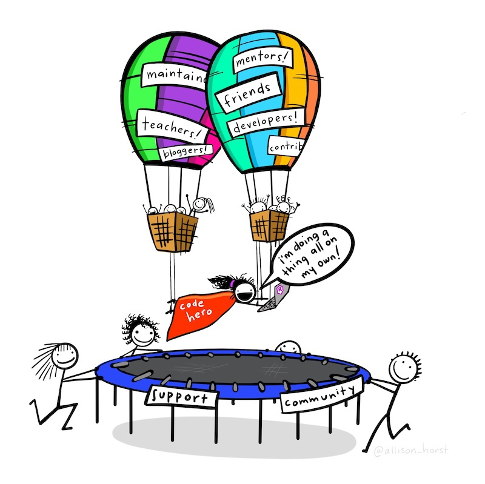
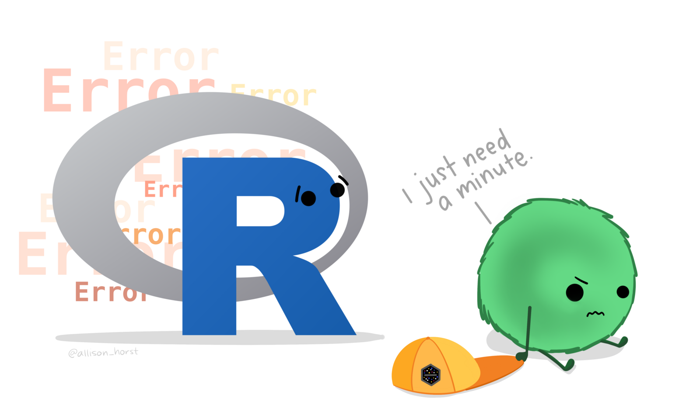

| uid | offense_code | offense_type | date | longitude | latitude |
|---|---|---|---|---|---|
| 9362175 | 26B | credit card/automated teller machine fraud | 2015-02-14 11:05:00 | -94.5715 | 39.1086 |
| 9362176 | 26B | credit card/automated teller machine fraud | 2015-02-14 11:05:00 | -94.5715 | 39.1086 |
| 9362201 | 26A | false pretenses/swindle/confidence game | 2015-02-14 13:30:00 | -94.6568 | 39.2453 |
| 9362202 | 26A | false pretenses/swindle/confidence game | 2015-02-14 13:30:00 | -94.6568 | 39.2453 |
| 9362213 | 26C | impersonation | 2015-02-14 15:00:00 | -94.5886 | 38.9956 |
| 9362214 | 26C | impersonation | 2015-02-14 15:00:00 | -94.5886 | 38.9956 |
7 Handling bugs in your code
Learn how to deal with error messages and other problems with the code that you write.
To load the interactive tutorial for this chapter, copy and paste the following code into the RStudio console:
and press Enter.
7.1 Introduction
In this tutorial we will learn how to deal with bugs in the R code that we write. It’s inevitable that you will make mistakes in the R code that you write. Everyone types the wrong command every now and again, just as everyone sometimes clicks the wrong button in other pieces of software. Learning how to identify and fix bugs is part of the process of learning to code.
Some errors are easy to identify and easy to fix. Imagine you are working on this dataset of frauds in Kansas City:
If you try to run this code:
Error in `select()`:
! Can't subset columns that don't exist.
✖ Column `offense_category` doesn't exist.You will get an error message saying something like:
Error: Can't subset columns that don't exist. x Column `offense_category` doesn't existIt causes an error.
In this case it is fairly easy to identify that one of the columns you have tried to select does not exist. Maybe you mis-remembered the name of the column. To find out what the correct column name is, you can either print the first few rows of the object (by typing the code head(frauds) into the R console) or use the names() function to print a list of column names present in the data:
Change the following code to correct the mistaken column name:
Error in `select()`:
! Can't subset columns that don't exist.
✖ Column `offense_category` doesn't exist.Other errors will be harder to identify and fix. In this tutorial we will go through the process of debugging – identifying, understanding and fixing errors in your code. Sometimes fixing issues with your code can feel like a bit of a roller coaster, but (like most things) it becomes much easier with practice, and if you approach errors in a systematic way.
![Cartoon showing 10 furry monsters showing different stages of learning to debug code. The monsters are marked '1. I got this', '2. Huh, really though that was it', '3. (...)', '4. Fine. Restarting.', '5. OH WTF', '6. Zombie meltdown', '7. [crying]', '8. A NEW HOPE!', '9. [insert awesome theme song]' and '10. I LOVE CODING!'](images/debugging.jpg)
7.2 Errors, warnings and messages
When something is not quite right, or just when there is an issue in your code that you should be aware of, R has three ways of communicating with you: messages, warnings and errors.
7.2.0.1 Messages
Messages are usually for information only and typically don’t require you to take any action. For example, the function get_crime_data() from the crimedata package issues a message to tell you what data it is downloading. It does this because downloading data sometimes takes a few seconds and without a message you might wonder if the code was working.
By default, messages are displayed in RStudio in dark red text, although this might vary if you have changed any settings in the Appearance tab of the RStudio Options dialogue. You can generate a message for yourself using the message() function. This is useful if you are writing code and you want to remind yourself of something, or record a particular value. For example, if your code is likely to take a long time to run, you might want to record the time your code started running by generating a message on the first line of your code:
When R prints a message about your code, any code underneath the code that generated the message will still run:
7.2.0.2 Warnings
Warnings are generated when there is a potential problem with your code, but the problem was not serious enough to stop your code running entirely. For example, ggplot2 functions like geom_point() will send a warning if some of the rows in your data contain missing values (e.g. if some crimes have missing co-ordinates).
Warnings are important and you should take time to read and understand them, but it is possible that having done so it will be safe to not take any action. Whether it is safe to take no action will often depend on exactly what you are trying to do, which is why it is important that you understand each warning that you see. For example, if you already know that some rows in your data contain missing values and are happy to plot the remaining values, it will be safe to ignore the warning produced by geom_point(). But if your dataset should not have any missing values in it, you will need to investigate why geom_point() is warning you about missing values and whether those values have been accidentally introduced by some part of your code.
It is not safe to ignore warnings unless you are sure why they occurred and certain that you don’t need to take any action.
One particularly dangerous scenario is where your code produces warnings but still produces what looks like a reasonable result. In these circumstances it can be tempting to ignore the warnings and assume that everything is fine, since the code still produced roughly what you were expecting. However, it’s possible that the plausible answer is nevertheless wrong because of whatever problem is generating the warning in R. Do not assume that warnings are safe to ignore just because they don’t stop your code running.
Warnings are displayed in the same font as messages, but with the text Warning: at the start. You can generate your own warning messages using the warning() function:
Warning: Something might be wrong. Check to make sure.As with messages, warnings will not stop your code running. This means that if the warning signalled a genuine problem with your code, the results of the lines underneath the warning might not be reliable. That is why it is important to understand warnings when you see them.
7.2.0.3 Errors
Errors are generated when there is something wrong with your code or the results it produces that means the code cannot continue running any further. An error might occur, for example, because the function read_csv() could not open the requested file (maybe because the file does not exist). In this case, it would make no sense for the rest of the code to run because it probably depends on the data that read_csv() was supposed to load but could not.
It would make sense to be able to generate your own errors using the error() function, but this is one of those times when the function to do something in R has a different name from that you might be expecting. In fact, you can generate an error using the stop() function:
Error in eval(expr, envir, enclos): Something is defintely wrong. Don't go any further until you've fixed it.There are two types of errors in R: syntax errors and logical errors. Syntax errors happen when R cannot read your code because of a mistake in how it has been typed out. For example, if you forget to put a comma between the arguments of a function, you will get this error:
When you run R code, R reads all the code and checks if it can be interpreted as valid R code. If not, R will produce a syntax error. Because all of your code is checked for syntax errors before any code is actually run, a syntax error anywhere in your code will stop all of your code running. Syntax errors are typically fairly easy to fix, because they are usually caused by typos.
The second type of error that can happen is a logical error. This happens when R is able to interpret what you have written, but something is wrong with what you have asked it to do. These are called logical errors because there is usually some problem with the logic of what you are asking R to do. Like syntax errors, logical errors can be caused by typos, but logical errors can also have many other causes.
There is a saying in programming that a computer will do exactly what you tell it to do, which may not be the same thing as what you wanted it do. Logical errors happen when you have told R to do something that it cannot do. For example, you might be asking R to multiply together a numeric value and a character value (e.g. 3 * "A"), which is illogical.
Since every step in your code depends on the steps that went before it, it is only possible to identify a logical error during the process of running the code. This means that a lot of your code might run successfully before an error occurs.
Logical errors are typically harder to fix than syntax errors are, because fixing a logical error involves understanding (a) what you have asked R to do and (b) the current state of everything in your code at the moment when the error occurs. Fortunately, there are lots of ways to identify and fix logical errors.
Now we know what errors, warning and messages are, we need to find out how to deal with them when they happen.
7.2.1 Check your understanding
quiz(
caption = "",
question(
"Which of the following terms is used in R to describe the way of communicating something for information only",
answer("A message", correct = TRUE),
answer(
"A warning",
message = "Not quite right: warnings in R communicate information that you need to investigate so you can decide what action to take."
),
answer(
"An error",
message = "Not quite right: errors in R communicate problems that prevent your code from running."
),
answer("A condition"),
correct = random_praise(),
allow_retry = TRUE,
random_answer_order = TRUE
)
)7.3 Finding problems
If an error or warning has a simple cause, such as the example of the incorrect column name in the previous section, you can just fix the problem and re-run the code. For problems that are more difficult to handle, you will need to follow a step-by-step process to find and fix them. Think of this as like being a mechanic fixing a car – first you work out what the problem is, then you fix it.
If you code only has one line, it will probably be obvious where any problem lies. But most of your code does several things to achieve a particular goal, such as making a map. The first task in dealing with a problem is therefore to work out exactly which function or other piece of code has caused it. For example, take this data-wrangling code to reduce the size of a dataset and sort it in date order:
library(tidyverse)
frauds |>
select(offense_type, date, longitude, latitude) |>
filter(offence_type == "impersonation") |>
arrange(date)Error in `filter()`:
ℹ In argument: `offence_type == "impersonation"`.
Caused by error:
! object 'offence_type' not foundThis code produces a fairly complicated error message. As is often the case, the most useful part of the error message is the last part:
Input `..1` is `offence_type == "impersonation"`This suggests the error is on line 3 of the code, since that is the only line containing the code offence_type == "impersonation". To check this, we can comment out that line by placing a # symbol at the start of the line. Do this and re-run the code above – it should now run without a problem.
Now we know the problem is on the line filter(offence_type == "impersonation"), we can look at that line in more detail. Can you spot the problem with that line?
The error message in this case has been caused by a typo – the code offence_type == "impersonation" uses the British spelling of the word ‘offence’ but in the dataset the variable is spelled using the American English ‘offense’ (you can see the US spelling in the line of code above the line that is causing the error).
If you correct the spelling in the code above, it should now run without a problem.
Sometimes it will not be as clear as this where to start in looking for the problem. In particular, some errors can be caused by a problem on one line of code, but only actually have a negative effect on a subsequent line of code. For example, if you run this code:
frauds |>
select(offense_code, longitude, latitude) |>
filter(offense_code == "26E") |>
arrange(date)Error in `arrange()`:
ℹ In argument: `..1 = date`.
Caused by error:
! `..1` must be a vector, not a function.The error message produced suggests the problem is with the arrange() function, but everything is correct with that function since arrange() is a correct function name and we already know that date is a column in the tibble named frauds. So the problem must lie elsewhere. In cases like this, it can be helpful to comment out all the lines of code except the first one and then uncomment one line at a time until you find the one that causes the problem.
With the following code, uncomment one line at a time starting on line 2, re-run the code and then uncomment another line. After you run the code each time, look at the output produced until an error occurs or you find that the output is not what you expected.
Did you get an error beginning <text>:5:0: unexpected end of input 3?
When commenting out lines of code in a code pipeline, it is important to remember to remove the pipe operator |> from the end of the last line of your code. Otherwise you will get an error that begins <text>:5:0: unexpected end of input 3 because R is expecting the final |> to have some code after it. Remember that R will ignore the lines that are commented out, so make sure every line in your pipeline ends with a |> except the last line that is not commented out.
If you uncommented all but the last line and run the code, you would see that the line select(offense_code, longitude, latitude) removes the column date from the dataset, so it’s not possible to use date as an argument to the arrange() function later on.
Uncommenting one line at a time until you find an error or output that is not what you expected is a useful way to isolate problems, but it will not always work. In particular, it will not work if the problem is caused by some code that should have been included but is missing from your code entirely. For example, if you try to run the function st_transform() on a tibble without first changing it into an SF object:
Linking to GEOS 3.11.0, GDAL 3.5.3, PROJ 9.1.0; sf_use_s2() is TRUEfrauds |>
select(offense_code, longitude, latitude) |>
filter(offense_code == "26A") |>
st_transform("EPSG:3603")Error in UseMethod("st_transform"): no applicable method for 'st_transform' applied to an object of class "c('tbl_df', 'tbl', 'data.frame')"In these cases it is particularly useful to check every argument that you have used in a function to track down the error. We will look at this later in this tutorial.
7.3.1 Errors caused by data problems
Many logical errors will be caused by problems with the code you have written, such as when you try to use a function (e.g. st_intersection()) that only works on an SF object but specify that it should use an object of another type. But sometimes logical errors are caused not by your code, but by a mis-match between the structure that your data actually has and the structure you think your data has. We have already seen an example of this in this tutorial, in the code that tried to refer to a column called offense_category in a dataset that did not have a column with that name.
Errors caused by a mismatch between the data you think you have and the data you actually have can be particularly frustrating, because there is no way to identify them from just looking at your code. For this reason, it is often important when trying to identify problems in your code to look at the data that is used as the input for your code, and the data that is produced by each step in your code. We used this technique to find the error in our code above that was caused by filter() removing all the rows from a dataset because we had told filter() to only keep rows containing a value that was not present in the dataset. There were no obvious problems with the code we had written, so the only way to find the cause of this problem was to view the dataset returned by the filter() function.
Finding data problems is one of the reasons why we have used the head() function so often in these tutorials to look at the data at each step in writing a block of code. head() only shows us the first few rows of a dataset, which will not always be enough to identify a problem if the problem is caused by values that are only present in a few rows in the data. For small datasets, we can use the View() function (note the capital letter) to open the entire dataset in a new tab in RStudio.
For bigger datasets, this will not work. In that case, we can use the sample_n() or sample_frac() functions from the dplyr package to return a random sample of rows from the data. This can be useful to let us look at a representative sample of a large dataset. sample_n() returns a specific number of rows, e.g. sample_n(frauds, 10) returns 10 rows at random from the frauds dataset. sample_frac() returns a specific proportion of the dataset, e.g. sample_frac(frauds, 0.1) returns a sample of 10% of rows from the data.
7.4 Understanding problems
So far, we have tried two ways to deal with errors:
- reading a simple error message that makes the problem obvious,
- commenting out all the code and then uncommenting one line a time until the error appears.
Sometimes you will encounter an error that is still not simple to solve. In this case, it is still important to identify the line of code causing the problem, either by working it out from the text of the error message or commenting out lines of code in turn.
Once you know what line is causing the problem, you should focus on understanding exactly what that line of code does. In particular:
- What data do any functions on that line expect to work on?
- What are the values of any arguments to the functions on that line?
- What value do the functions on that line produce?
You can get a lot of help in understanding each function by referring to its manual page. You can access the manual page for a function by:
- typing a question mark followed by the function name without parentheses (e.g.
?mutate) into the R console, - typing the function name without parentheses into the search box in the Help panel in RStudio, or
- clicking on the function name anywhere in your R code to place the cursor on the function name, then pressing
F1on your keyboard.
Any of these options opens up a manual page for that function in the Help panel in RStudio. For example, this is the manual page for the str_wrap() function from the stringr package. You can load it by typing ?str_wrap in the R console.
Did you get an error beginning No documentation for ‘str_wrap’?
When you use the ? operator to look up the manual page for a function, R searches through all the functions in the packages you have loaded. If there is no function of the name you have given in the loaded packages, R will produce an error.
To access the manual page of a function in a package that is not loaded, you can specify the package in which R should look for the function using the package name and the :: operator (this is the same way that we have already learned to call functions from packages that haven’t been loaded). For example, you can use the code ?stringr::str_wrap to access the manual page for the str_wrap() function from the stringr package even if the stringr package is not loaded.

All manual pages have the same format.
-
Description gives a short description of what the function does. If multiple related functions are described in a single manual page, this section will explain the differences between them. For example, the manual page for the
mutate()function from thedplyrpackage explains the difference between themutate()function and the closely relatedtransmute()function. -
Usage shows a single example of how the function works. If there are any optional arguments to the function, this section will show what the default values of those optional arguments are. For example, the manual page for the
str_wrap()function from thestringrpackage show that the default value of thewidthargument iswidth = 80. -
Arguments gives a list of arguments and the values they can take. It is particularly important to note the type of value expected. So the
st_transform()function from thesfpackage expects an SF object as its first argument – if you provide another sort of object (such as a tibble), this will cause an error. -
Value explains the type of value that the function will return, and whether this value might be of a different type depending on the values of particular arguments. For example, the
mean()function in base R returns the arithmetic mean of a vector of numbers. However, if any of the numbers isNAthen mean will returnNAunless the argumentna.rm = TRUEis used. In that case,mean()will ignore the missing values and return the mean of the values that are present. - Examples gives more examples of how the function can be used.
Checking the manual page for a function can often help you understand why a particular piece of code is not working. If you have set any optional arguments for a function that is producing an error, it may help to reset those arguments to their default values (as shown in the Usage section of the manual page) one by one to understand what effect this has on your code.
By reading the error message, isolating the error by commenting out and then reading the manual page, you will be able to fix almost all the errors you will come across in writing R code. Occasionally, however, you will find an error that you just can’t understand. In that case, you will need to get some help from others.
7.5 How to fix some common errors
There are some mistakes that it is common for people to make when writing code. As you get more experience in writing R code and dealing with error messages, you are likely to start to recognise some simple errors (especially those caused by typos) and know how to fix them quickly. One useful way to quickly find help on common errors is to check if the error (and the corresponding solution) appears on this list of common R errors and how to fix them.
7.5.1 Check your understanding
quiz(
caption = "",
question(
'What might cause the error message `could not find function "blah"`?',
answer(
"You have not loaded the package that contains the `blah()` function",
correct = TRUE
),
answer(
"You have mis-typed the name of the `blah()` function",
correct = TRUE
),
answer(
"You have mis-typed the name of the `blah` object",
message = "Not quite. This error message relates to a function called `blah`, not an object."
),
answer(
"You have tried to use a generic function with a type of object the function does not know how to use"
),
correct = random_praise(),
allow_retry = TRUE,
random_answer_order = TRUE
)
)7.6 Getting external help
If you cannot fix an error using any of the techniques we have already covered, it is probably time to get some help from others. Fortunately, one of the big benefits of using R is that there is a friendly, welcoming community of R coders online who are willing to help fix problems. Almost everyone in this community will remember when they were knew to using R and so will be gentle with people who are asking their first question.
7.6.1 Reproducible examples

One of the things that makes it much more likely that you will find help with your problem in the R community is if you phrase your plea for help in a way that makes it easier to help you. We can do this by providing a reproducible example or reprex of our problem (also sometimes called a minimum working example).
Producing a reprex makes it much easier for someone to understand your issue. This not only makes it easier for someone to help you, but also shows that you know it will make it easier for them and that you value their time.
Imagine that you’ve made a cake, and for some reason it’s turned out absolutely awful – we’re talking completely inedible. Asking a question without a reprex is like asking, “Why didn’t my cake turn out right?” – there are hundreds of possible answers to that question, and it’s going to take a long time to narrow in on the exact cause for your inedible cake creation.
Asking a question with a reprex is like asking, “My cake didn’t turn out, and here’s the recipe I used and the steps that I followed. Where did I go wrong?” Using this method is going to significantly increase the likelihood of you getting a helpful response, faster!
To make a reprex, we have to do two things:
- Remove everything from our code that does not contribute to causing the error. We do this by removing each line from our code and only keeping those lines that are necessary to produce the error – this is why a reproducible example is sometimes called a minimum working example.
- Make sure that someone trying to help us can reproduce the issue on their own computer even if they don’t have access to the particular dataset we are using. We do this by replacing our own dataset with a publicly available one, preferably one of the datasets that are built into R for exactly this purpose.
Watch this video to see the process of making a reprex in RStudio:
7.6.2 Reproducible code
Our first step is to remove every line from our code that isn’t necessary to produce the error. For example, run the following code to see what error it produces.
# Load packages
library(dplyr)
library(ggplot2)
library(readr)
# Load a dataset from your computer and wrangle it
road_deaths <- read_csv("road_deaths_data.csv") |>
janitor::clean_names() |>
rename(ksi_drivers = drivers, ksi_pass_front = front, ksi_pass_rear = rear) |>
select(-petrol_price, -van_killed) |>
mutate(
law = as.logical(law),
ksi_driver_rate = ksi_drivers / (kms / 1000)
)Rows: 192 Columns: 9
── Column specification ────────────────────────────────────────────────────────
Delimiter: ","
dbl (8): DriversKilled, drivers, front, rear, kms, PetrolPrice, VanKilled, law
date (1): month_beginning
ℹ Use `spec()` to retrieve the full column specification for this data.
ℹ Specify the column types or set `show_col_types = FALSE` to quiet this message.# Make a time-series chart of two continuous variables, coloured by a
# categorical variable, then add a trend line
road_deaths +
ggplot(aes(x = month_beginning, y = ksi_driver_rate)) +
geom_point(aes(colour = law)) +
geom_smooth() +
scale_x_date(date_breaks = "2 years", date_labels = "%Y") +
scale_y_continuous(labels = scales::comma_format(), limits = c(0, NA)) +
scale_colour_brewer(type = "qual") +
labs(
x = NULL,
y = "drivers killed or seriously injured per 1,000km travelled",
colour = "after seat belts made mandatory"
) +
theme_minimal() +
theme(
axis.line.x = element_line(colour = "grey90"),
axis.ticks = element_line(colour = "grey90"),
panel.grid.major.x = element_blank(),
panel.grid.minor.x = element_blank(),
legend.position = "bottom"
)Error in `fortify()`:
! `data` must be a <data.frame>, or an object coercible by `fortify()`,
or a valid <data.frame>-like object coercible by `as.data.frame()`, not a
<uneval> object.
ℹ Did you accidentally pass `aes()` to the `data` argument?As you can see, this code produces an error message that is not easy to decipher, so we might need help to deal with it. As the first stage to making a reprex, remove all the lines of the code above that it is possible to remove while still producing the same error. If the error disappears and the chart is produced successfully, you have probably found the line that contains the error. If you remove a line and the code starts to produce a different error, you have removed a line that is needed to produce the original error and should put that line back into the code.
It is actually possible to remove a lot of the original code and still produce the same error. You can remove:
- All the lines of code that fine-tune the appearance of the chart (lines 22–37 above).
- The line creating the trend line (line 21).
- The code that wrangles our data in ways that don’t affect the error (lines 8–14).
- The line that loads the
dplyrpackage (line 2), since we are no-longer using the data wrangling functions from that package.
We cannot remove the code that loads necessary packages (lines 3 and 4), loads the data (line 7) or produces the basic unformatted chart (lines 18–20), because if we remove any of those then the error message either changes or disappears.
This leaves us with the following code, which produces the same error message but is much easier for someone to check for errors because it is much shorter. Because we have removed the data-wrangling code, we have had to change the name of the argument on line 19 of the code above from y = ksi_driver_rate to y = drivers, since the column ksi_driver_rate is no longer in the data.
If we forgot to change y = ksi_driver_rate to y = drivers then the code would still produce an error, but it would be a different error. The purpose of producing a reprex is to find the minimum code that still produces the same error we are interested in. If you remove a line of code and the error message you see changes, put that line of code back.
If this shortened code were to run successfully then the resulting chart would look quite different to the original chart we wanted, but that does not matter because what we are interested in is showing code that produces a specific error. If you run this code, you will see it produces the same error as the code above.
# Load packages
library(ggplot2)
library(readr)
# Load a dataset from your computer and wrangle it
road_deaths <- read_csv("road_deaths_data.csv")Rows: 192 Columns: 9
── Column specification ────────────────────────────────────────────────────────
Delimiter: ","
dbl (8): DriversKilled, drivers, front, rear, kms, PetrolPrice, VanKilled, law
date (1): month_beginning
ℹ Use `spec()` to retrieve the full column specification for this data.
ℹ Specify the column types or set `show_col_types = FALSE` to quiet this message.# Make a time-series chart of two continuous variables, coloured by a
# categorical variable, then add a trend line
road_deaths +
ggplot(aes(x = month_beginning, y = drivers)) +
geom_point(aes(colour = law))Error in `fortify()`:
! `data` must be a <data.frame>, or an object coercible by `fortify()`,
or a valid <data.frame>-like object coercible by `as.data.frame()`, not a
<uneval> object.
ℹ Did you accidentally pass `aes()` to the `data` argument?7.6.3 Reproducible data
Our shortened code would make a great reproducible example except for one thing: the data file road_deaths_data.csv only exists on our computer. This means the example is not actually reproducible, since anyone trying to run this code on their computer to identify the error would find that they instead got a different error saying that the file road_deaths_data.csv was not found.
You could deal with this by uploading your dataset to a website and then having the read_csv() function read it from that URL. But you might not want to share your data (perhaps it is sensitive in some way), or your dataset might be too large to post online. For this reason, many R packages come with toy datasets that can be used in learning or in testing for errors. You can see a list of all the toy datasets available in the packages you have loaded by typing data() in the R console. This will produce a file that gives the name and description of each available dataset.
To use one of these toy datasets, you just use the the name of the dataset as you would use any other R object (like the road_deaths object we created above). One commonly used toy dataset is the mpg dataset from the ggplot2 package, which contains fuel economy data for 38 models of car.
The data in this dataset are on a completely different topic to the data we were trying to use, but this does not matter as long as the data contains variables of the same type (numeric, character, etc.) as the original data. We can see what variables are in the mpg dataset using the head() function as usual.
# A tibble: 6 × 11
manufacturer model displ year cyl trans drv cty hwy fl class
<chr> <chr> <dbl> <int> <int> <chr> <chr> <int> <int> <chr> <chr>
1 audi a4 1.8 1999 4 auto(l5) f 18 29 p compa…
2 audi a4 1.8 1999 4 manual(m5) f 21 29 p compa…
3 audi a4 2 2008 4 manual(m6) f 20 31 p compa…
4 audi a4 2 2008 4 auto(av) f 21 30 p compa…
5 audi a4 2.8 1999 6 auto(l5) f 16 26 p compa…
6 audi a4 2.8 1999 6 manual(m5) f 18 26 p compa…From this, we can see that there is a year variable that we can use as a substitute for the month_beginning variable in our original code, a variable called hwy that is numeric and so can be substituted for the drivers variable in our code, and a categorical variable called trans that we can substitute for the law variable in our data. This means we can use this data instead of our own data, knowing that anyone on any computer with the ggplot2 package installed can run the code and should get the same result.
Change the code below so that it uses the mpg dataset rather than loads data from the road_deaths_data.csv file. You will need to change the variable names in the stack of ggplot() functions.
# Load packages
library(ggplot2)
library(readr)
# Load a dataset from your computer and wrangle it
road_deaths <- read_csv("road_deaths_data.csv")Rows: 192 Columns: 9
── Column specification ────────────────────────────────────────────────────────
Delimiter: ","
dbl (8): DriversKilled, drivers, front, rear, kms, PetrolPrice, VanKilled, law
date (1): month_beginning
ℹ Use `spec()` to retrieve the full column specification for this data.
ℹ Specify the column types or set `show_col_types = FALSE` to quiet this message.# Make a time-series chart of two continuous variables, coloured by a
# categorical variable
road_deaths +
ggplot(aes(x = month_beginning, y = drivers)) +
geom_point(aes(colour = law))Error in `fortify()`:
! `data` must be a <data.frame>, or an object coercible by `fortify()`,
or a valid <data.frame>-like object coercible by `as.data.frame()`, not a
<uneval> object.
ℹ Did you accidentally pass `aes()` to the `data` argument?We can change our existing reprex code to use the mpg dataset rather than load data from the road_deaths_data.csv file by changing the variable names in the ggplot() stack.
# Load packages
library(ggplot2)
# Make a time-series chart of two continuous variables, coloured by a
# categorical variable
mpg +
ggplot(aes(x = year, y = hwy)) +
geom_point(aes(colour = trans))Error in `fortify()`:
! `data` must be a <data.frame>, or an object coercible by `fortify()`,
or a valid <data.frame>-like object coercible by `as.data.frame()`, not a
<uneval> object.
ℹ Did you accidentally pass `aes()` to the `data` argument?We have now managed to reduce our original 37 lines of code down to 8 lines, as well as making the example reproducible by using a widely available toy dataset. The shorter code still produces the same error while being much easier to read, so we are much more likely to get help quickly than if we had just sent someone our original code.
Most of the time, the act of producing a reprex will be enough for us to find and fix the error without any external help. Can you see the problem with our code that is making this error happen? If not, we will reveal it at the end of this tutorial.
7.6.4 Checking your reprex is reproducible
Now that you have the minimum code needed to reproduce the error, it’s almost time to share it with people who can help you. But before you do that, it’s worth checking that the code is truly reproducible. To do this we will use the reprex package, which is part of the tidyverse suite of packages you already have installed.

To use the reprex package, first put your code in a separate R document in the Source panel in RStudio. Open a new R script in RStudio now and paste the code from the last exercise into it. Once you’ve done that, select all the code in that document. Now click the Addins button in RStudio and scroll down until you can choose Reprex selection.
After a few seconds, some code should appear in the RStudio Viewer panel showing your code and the error message that it produces. This code has also been copied to your computer clipboard so that you can paste it into an email or web form when you are asking for help.
If the error message that you see along with the code in the Viewer panel is not the error message you were expecting, your example is not yet reproducible. For example if you tried to run the Reprex selection command on the original code that we started this section with, we would get an error message 'road_deaths_data.csv' does not exist in current working directory.
Once your reprex produces the same error as the code you originally had the issue with, you’re ready to share it to get help.
7.7 Sources of help
If you are being taught R by a formal instructor, or you have friends or colleagues who can help, they will probably be the first people that you go to for help.
If this doesn’t work, or if you are the most proficient R user that you know, you might need another place to turn to. Fortunately, R has a large community of volunteers who will help you. Before you ask people online for help, it’s important to check that someone hasn’t already asked the same question and had it answered. Duplicate questions increase the workload of the volunteers who answer questions and slow everything down, so if your question has frequently been answered already it’s possible your question will just be ignored.
To find out if there is an answer to your question, the easiest thing to do is to search the error message online. Google, or another search engine of your choice, is definitely your friend. If you search online for the error message that was produced by our reprex code, you will see that there are over 100 pages discussing this error message and how to fix it.
7.7.0.1 Stack Overflow
Let’s imagine, though, that there were no relevant hits when we searched for the error message, or that none of the results was useful. In that case, we need to pose a new question to the R community. The place to find the largest slice of that community is probably the website Stack Overflow. This is a website for people who are writing code in any programming language imaginable to get help. It is part of the larger Stack Exchange Network of question-and-answer websites covering everything from travel to veganism.
To ask a new question on Stack Overflow, go to stackoverflow.com/questions/ask and create an account or log in. You will now be asked to complete a short form with your question. Questions are more likely to get an answer faster if you:
- Give the question a specific title. Over 20 million questions have been asked on Stack Overflow since it launched, so a generic title like ‘Help’, ‘R error’ or even ‘ggplot error’ will not help other people find your question. Look at some recent questions about R on Stack Overflow to get some ideas on what title to give for your question.
- In the body of your question, briefly (2–3 lines should do it) explain what you were trying to do, then paste the reprex output that the
Reprex selectionaddin copied to your clipboard into the question body box underneath your brief explanation. You will see that Stack Overflow recognises the format of your code and shows you a preview of it underneath the question box. - Finally, add the tag
rto the Tags box so that people know your question is about coding in R. This is crucial – if you do not tag your question as being about R, it is very unlikely that volunteers who know about R will be able to find your question.
Submit your question and wait for an answer. As soon as someone answers your question, or comments on it to ask for more detail, you will get an email alert. Many questions are typically answered within a few hours. Hopefully this will help you get to the final stage of the emotional roller coaster of debugging:
7.8 Coding with AI
One topic that we haven’t covered yet is using artificial intelligence (AI) to help us produce R code. The type of AI that can be used to help produce code is called a large language model (LLM), sometimes known as a generative AI model. The best known of these among the public is probably ChatGPT, but there are lots of similar services available (and new ones being released all the time).
7.8.0.1 Coding with AI: an example
Generative AI services can help you to write code, especially code that does very common tasks like loading data. For example, say that I want to load the Vancouver thefts dataset that we used in a previous tutorial and convert the column names in the data to snake_case. As a reminder, the code we previously used to do that looked like this:
library(tidyverse)
vancouver_thefts <- read_csv("https://mpjashby.github.io/crimemappingdata/vancouver_thefts.csv.gz") |>
janitor::clean_names()I can ask ChatGPT (version 3.5) to write code for me that will do this task. If I ask ChatGPT “Show me the R code needed to load the CSV dataset at https://mpjashby.github.io/crimemappingdata/vancouver_thefts.csv.gz and make the column names into snake case”, it will produce some R code that looks roughly like this:
# Install and load the required packages if not already installed
# install.packages("readr")
# install.packages("snakecase")
library(readr)
library(snakecase)
# URL of the CSV file
url <- "https://mpjashby.github.io/crimemappingdata/vancouver_thefts.csv.gz"
# Read the CSV file and convert column names to snake case
data <- read_csv(url, col_names = TRUE) %>%
snakecase::to_snake_case()
# Display the first few rows of the dataset
head(data)ChatGPT also produces a short explanation of what the code does:
This code uses the
read_csv()function from thereadrpackage to read the CSV file from the specified URL. Thecol_names = TRUEargument ensures that column names are read from the first row of the CSV file. Thesnakecase::to_snake_case()part applies the transformation to snake case for all column names.
Make sure to install the
readrandsnakecasepackages before running this code if you haven’t done so already. You can uncomment theinstall.packages("readr")andinstall.packages("snakecase")lines for installation.
Unfortunately, if you try to run the code above you will find it produces two errors:
-
could not find function "%>%". The code generated by ChatGPT uses the%>%operator, which is an older version of the|>pipe operator we use in this course. But the%>%operator is part of themagrittrpackage, so to use it the code needs to load themagrittrpackage first. -
argument is not a character vector. The code produced by ChatGPT passes the tibble loaded byread_csv()to theto_snake_case()function from thesnakecasepackage. Butto_snake_case()expects a vector of character values (e.g.c("aCharacterValue", "ANOTHERCHR")), not a tibble. This is in contrast tojanitor::clean_names(), which performs the same function and does accept a tibble as input.
There are also a few of more-minor issues that won’t produce errors, but might make your code harder to work with:
- The code creates an object called
url. Storing the URL in a separate object is unnecessary (since we only need the URL once) and creates a risk that we could end up loading the wrong dataset if we later accidentally over-wrote the value of theurlobject with a different URL. - The code creates an object with the generic name
data, which might make it harder to remember later on what data is stored in that object. This is especially likely to be an issue if we come back to the code after a break, or if we need to use multiple datasets as part of our analysis. - The code loads the
snakecasepackage, but then also refers to the package using the::notation when using the functionto_snake_case(). This is not a big deal, but makes the code slightly longer and therefore marginally harder to read.
Why did I get a different result when I put the same prompt into ChatGPT?
If you put the text “Show me the R code needed to load the CSV dataset at https://mpjashby.github.io/crimemappingdata/vancouver_thefts.csv.gz and make the column names into snake case” into ChatGPT 3.5, it is possible that you will get a slightly different response to the one shown above. This is because large language models are stochastic or non-deterministic models, which means that there is some element of chance involved in exactly what response the model will produce for a particular input. In fact, if you provide exactly the same input to ChatGPT multiple times, it is likely you will get a slightly different answer each time.
7.8.0.2 Why did ChatGPT produce code that doesn’t work?
Why do these problems happen? To understand that, we need to know just a little bit about how large language models such as ChatGPT work. LLMs work by looking for patterns in very large datasets (e.g. all the pages on the world wide web) and then using those patterns to predict what the most likely answer is to questions or requests that include particular words and phrases. To give a very simple example, an LLM might be able to identify that if the first few words in a sentence are ‘Today was Sunday, which meant that tomorrow …’ then it is likely (but – crucially – not certain!) that the next words would be ‘is Monday’.
Because they are trained on very large samples of data, LLMs can produce answers that are sophisticated enough that they almost look like magic. But behind the scenes, what models like ChatGPT are doing is predicting what the most likely combination of words a response will contain, based on the input that it is given. It is important to remember that models such as ChatGPT do not know the correct answer to a question, since they do not actually understand the question in the way that humans do. This means that ChatGPT cannot give you any indication of how confident it is about the answer it has given: it will be equally confident in its answer whether it is right or wrong.

7.8.0.3 Should I use AI to help me code?
So given these issues, does that mean that we shouldn’t use LLMs to help us write code? Not necessarily. Lots of programmers find LLMs useful for helping them write code. However, LLMs like ChatGPT are useful for supporting humans to write effective code, not for replacing humans writing code. Even if you asked an LLM to write every part of your code for you, it is likely you would need to make some changes to the code it produced to make it work.
That means that to use an LLM effectively to help you write code, you need to understand the code that the LLM produces. That’s why this course teaches you to understand how to write code to produce crime maps in R, rather than just how to use an LLM to write the code for you.
Whether to use an LLM to help you write code is up to you. Some people find it saves them time and helps them get started on how to produce a particular bit of code, while others find that they spend just as much time fixing the code produced by an LLM as it would take them to write the code themselves. You might want to experiment with getting help from an LLM so you can see what works for you.
7.8.0.4 Using AI to help map crime
There are two further important points to make about using LLMs in the context of crime mapping. First, it is vital that you do not upload any sensitive data to an LLM that is hosted online, since it is likely that the company that runs the LLM will have reserved the right to use any data you submit to improve the model in future. You must make sure that sensitive data such as victim details are not posted online or shared unlawfully.
The second important point is that the analysis that we use crime mapping for is usually done to answer important questions such as where crime-prevention initiatives should be focused or where a serial offender might live. It is vital that the answers we produce to these questions are accurate. Part of making sure the results of our analysis are accurate is to make sure that we understand exactly how our code produces a particular result. If you use an LLM to support your coding, it is vital that you still understand what the code does.
7.9 In summary
7.9.0.1 A workflow for handling errors in R
When you run some code in R and it produces an error, follow the steps learned in this tutorial to identify and fix the problem.
- Read the error message and fix any obvious problems.
- Make sure your code follows the style guide introduced in the previous tutorials, which will make it easier to see where there might be problems, especially those caused by typos. In particular, make sure that each function is on a separate line so you can comment them out individually.
- Comment out all the lines of your code. Uncomment each line in turn (starting with the first line), re-running the code each time until you see the error you’re trying to understand. Now you know which line is likely to be causing the problem.
- If the error message is one of the common errors explained in this tutorial, follow the steps outlined in the previous section to fix it.
- If that does not fix the problem, read the manual page for the function that you think is causing the problem. Check that the values you have passed to each argument are what the function needs in order to work.
- If that does not fix the problem, create a reproducible example by removing all the parts of your code not needed to create the error. Often, the act of creating a reproducible example will help you fix the problem, but if not then you can use it to get help from others.
You will be able to fix almost all the errors in your code by following the early steps in this list. Only quite rarely will you need to post a reprex online to get help.
7.9.0.2 What caused the error in our reproducible example?
The error in our reproducible example was very simple, but quite difficult to spot. On line 7 of the code below, we try to add the ggplot() function to the mpg object using the + operator when what we wanted to do was pass the mpg object to the ggplot() function using the |> operator. R does not know how to add a dataset to a function in this way so it produced an error message.
If you replaced + with |> on line 6 of the code below, the code would now run normally. Since we have removed almost all of our original code to make a reproducible example, the resulting plot looks nothing like what we wanted. This does not matter – when we are producing a reprex we only care about reliably producing the same error. Now that we have fixed the error, we could go back and fix the original code to produce the chart we wanted.
# load packages
library(ggplot2)
# make a time-series chart of two continuous variables, coloured by a
# categorical variable
mpg + # <---- THE `+` OPERATOR HERE SHOULD BE A `|>` OPERATOR INSTEAD
ggplot(aes(x = year, y = hwy)) +
geom_point(aes(colour = trans))The mistake in this code is a very easy one to make, because what + does inside a ggplot() stack is so similar to what |> does in passing the result of one function to the next function in an data-wrangling pipeline. Remember that we only use + to combine functions inside a ggplot() stack, and use |> to combine functions everywhere else.
In this tutorial we have learned how to handle messages, warnings and errors in R. We have learned to take time to understand error messages, to isolate errors so that we can better understand them, to use manual pages for functions to check that every argument is correct, and how to write reproducible examples so that we can get help online. This will help you become a more independent coder.
For more information on writing reproducible examples, see:
- Watch the webinar Creating reproducible examples with reprex by Jenny Bryan.
- Read the Reprex do’s and don’ts on the
reprexpackage website. - Learn more about how to use Six tips for better coding with ChatGPT